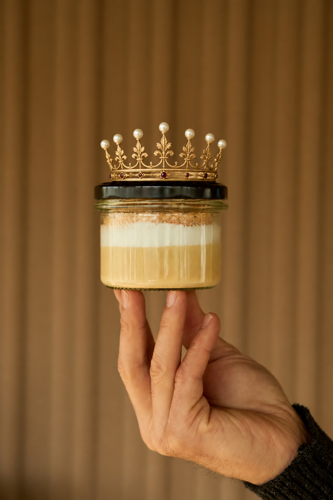

Izbrani okus.
Kremaste plasti in hrustljav zaključek. Razkošje, ki ga okusiš.
ARISTOKRATINJA MED KREMŠNITAMI
Njena kremna visokost.
Plemenito poreklo. Rastlinski značaj.
Nepozaben okus.
Slovenska klasika z lastnimi pravili.
100 % rastlinsko · Brez mleka in jajc

PLEMIŠKI RODOVNIK. SODOBEN ZNAČAJ.
Njeno plemenito poreklo? Priljubljena slovenska kremšnita. Njena mala revolucija? Rastlinske sestavine in steklen kozarček. Razkošne kremaste plasti ostajajo, hrustljav posip iz drobljenega listnatega testa pa poskrbi za veliki finale.
Na osnovi ekološkega sojinega napitka, brez mleka in jajc. Grofica z izbranim okusom, ki tradicijo spoštuje dovolj, da si jo upa narediti po svoje.
Rezerviraj si sladko avdienco ↗Kremaste plasti in hrustljav zaključek. Razkošje, ki ga okusiš.
100 % rastlinska receptura. Mleko in jajca tokrat nista na seznamu gostov.
Steklen kozarček. Za doma, na pot ali na mizo. Osebje ni potrebno.

IZ DVORANE V VSAKDAN
Ob kavi, na druženju ali na kavču. Njena visokost ima rada izbrano družbo, a pri izbiri naslanjača ni prav nič vzvišena.
 Tilen Konte · ustvarjalec GRETE
Tilen Konte · ustvarjalec GRETEZA VSAKO GROFICO STOJI RADOVEDNOST
Sem Tilen, doktor biokemije in molekularne biologije ter ljubitelj dobre hrane. Skoraj dve desetletji raziskovalnih izkušenj na univerzah in v industriji sem povezal s strastjo do kulinarike.
Verjamem v prihodnost hrane iz lokalnih rastlinskih sestavin. Tako je nastala GRETA: znan okus, premišljena receptura in dovolj samosvojosti za novo poglavje. Plemiški naziv je igriva zgodba. Strast do dobre sladice pa povsem resnična.
✳ Podjetniška ideja, nagrajena s prvim mestom na natečaju Zlata šapa 2026.

POVABILO ZA KAVARNE IN GOSTINCE
Znan okus s samosvojim nastopom. Za vaše goste in njihove sladke trenutke. Pišite za vzorce in B2B ponudbo. Srebrni pladnji so neobvezni.
Povabite GRETO v goste ↗DOPISOVANJE Z DVOROM
Za naročilo, razpoložljivost in možnosti prevzema nam piši ali pokliči. Naziv ni pogoj. Dober tek je dovolj.
tilen.konte@gmail.com ↗041 299 444